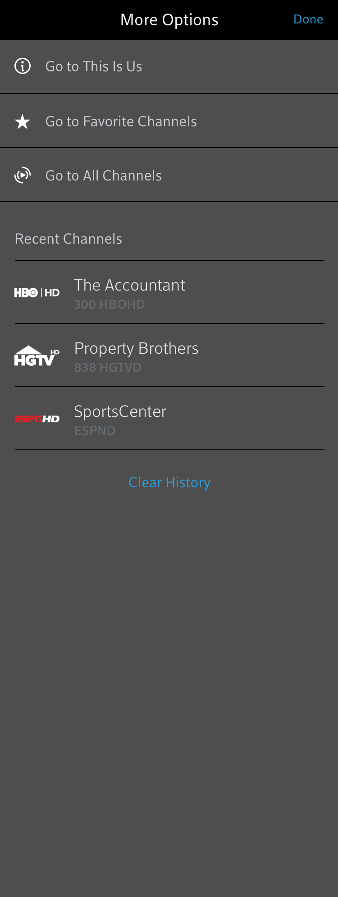

<link rel="import" href="../../../bower_components/polymer/polymer.html">
<!-- <link rel="import" href="../../bower_components/polymer/lib/utils/gestures.html"> -->
<link rel="import" href="../../components/stream-icons/stream-icons.html">
<link rel="import" href="../../../bower_components/polymer/lib/mixins/gesture-event-listeners.html">
<link rel="import" href="../../components/stream-video-player/stream-video-player.html">
<link rel="import" href="../../components/stream-transport-bar/stream-transport-bar.html">
<link rel="import" href="../../components/stream-player-controls/stream-player-controls.html">

<dom-module id="stream-player-view">
  <template>
    <style>
      :host {
        display: block;
        background-color: #000000;
        min-height: 100vh;
        max-height: 100vh;
        margin: 0;
        overflow: hidden;
        position: relative;
        pointer-events: auto;
        transform-origin: bottom right;
      }

      #screenTop {
        opacity: 1;
        margin-top: 0px;
      }
      #topControls {
        margin: 13px 8px 0 8px;
        height: 48px;
        position: relative;
      }

      #topControls .icon {
        height: 24px;
        width: 24px;
        padding: 12px;
      }

      #topControls .icon#iconClose {
        float: left;
      }

      #topControls .icon#iconMinify {
        float: right;
        margin-right: 10px;
      }

      #topControls .icon#iconMore {
        float: right;
      }

      #programInfo {
        display: inline-block;
        margin: 8px 16px 0 16px;
      }

      #programInfo .logo {
        display: inline-block;
        width: 50px;
        height: 30px;
        margin-right: 17px;
      }

      #programInfo .info {
        display: inline-block;
      }

      #programInfo .info .title {
        font-weight: 500;
        font-size: 18px;
        color: #FFFFFF;
      }

      #programInfo .info .channel {
        font-weight: 500;
        font-size: 14px;
        color: #B1B9BF;
      }

      #playerControls {
        position: relative;
        display: inline-block;
        left: 50%;
        opacity: 1;
        -webkit-transform: translateX(-50%);
        -moz-transform: translateX(-50%);
        transform: translateX(-50%);
      }

      #videoPlayer {
        bottom: 50%;
        right: 0;
        background-color: #000000;
        transform-origin: bottom right;
        transform: translateY(50%);
        transition: bottom 0.3s cubic-bezier(0.13, 0.7, 0.48, 1.01),
        right 0.3s cubic-bezier(0.13, 0.7, 0.48, 1.01),
        background-color 0.2s cubic-bezier(0.13, 0.7, 0.48, 1.01),
        transform 0.3s cubic-bezier(0.13, 0.7, 0.48, 1.01);
      }

      #videoPlayer[size="mini"] {
        background-color: transparent;
        transform: scale(0.355) translateY(0);
        bottom: 20px;
        right: 20px;
        pointer-events: auto;
      }

      #transportBar {
        position: relative;
        display: inline-block;
        margin-top: 28px;
        left: 50%;
        opacity: 1;
        -webkit-transform: translateX(-50%);
        -moz-transform: translateX(-50%);
        transform: translateX(-50%);
      }

      #moreOverlay {
        position: absolute;
        top: 100%;
        width: 100%;
        display: block;
        transition: top 0.3s cubic-bezier(0.13, 0.7, 0.48, 1.01);
      }

      #moreOverlay[active="true"] {
        top: 0px;
      }
    </style>
    <div id="screenTop">
      <div id="topControls">
        <iron-icon class="icon" id="iconClose" icon="stream-icons:IconClose" on-click="closeView"></iron-icon>
        <iron-icon class="icon" id="iconMore" icon="stream-icons:IconMore" on-click="expandMoreOverlay"></iron-icon>
        <iron-icon class="icon" id="iconMinify" icon="stream-icons:IconMin" on-click="minifyPlayer"></iron-icon>
      </div>
      <div id=programInfo>
        
        <div class="info">
          <div class="title">Big Buck Bunny</div>
          <div class="channel">300 USA Network</div>
        </div>
      </div>
    </div>
    <stream-video-player id="videoPlayer" on-click="maximizePlayer"></stream-video-player>
    <div id="contorlContainer">
      <stream-player-controls id="playerControls"></stream-player-controls>
      <stream-transport-bar id="transportBar"></stream-transport-bar>
    </div>
    
  </template>
  <script src="../../../vendorjs/TweenMax.min.js"></script>
  <script src="stream-player-view.js"></script>
  </script>
</dom-module>